制作复刻
按分类标准制作建筑复刻（.schem 结构模板），尽量贴合原插件建筑的比例与外观。

一个面向玩家的开放社区。你可以在这里投稿原版 / 第三方插件的建筑复刻， 由 TC（TheoCraft）团队审核并纳入转换器的结构库，让更多人用上你还原的建筑。
任何人都可以投稿，TC 团队会逐份审核，通过后并入正式结构库。
按分类标准制作建筑复刻（.schem 结构模板），尽量贴合原插件建筑的比例与外观。
通过投稿入口上传作品，选择对应分类，并填写插件来源、作者与简要说明。
TC 团队审核通过后，作品会并入转换器的结构库，署名展示在本页。
分类体系与转换器的结构库保持一致。当前为占位内容，后端接入后将显示真实投稿。